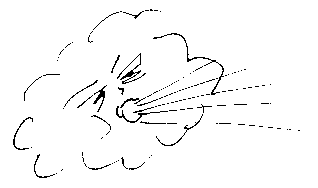

 Au mais d'août souvent un tourbillon s'empouque dans eune cliôsée d'avoût et mêle toutes les dgèrbes. Eh bein, v'là tchi s'appelle la folle d'avoût, ou la vielle d'avoût. Et pus heûse en êté étout, quand nou-s-est entouor les fains, la même chose s'arrive.
Ch'est eune fée, qu'la vielle d'avoût, tchi chèrche à s'empather d'la récolte, et n'y'a qu'eune chose à faithe - happer eune fourtchette à fain, ou même un couté s'i'y'en a iun d'amain, et fliantchi ch'la à la touâle.
Viyiz étout: